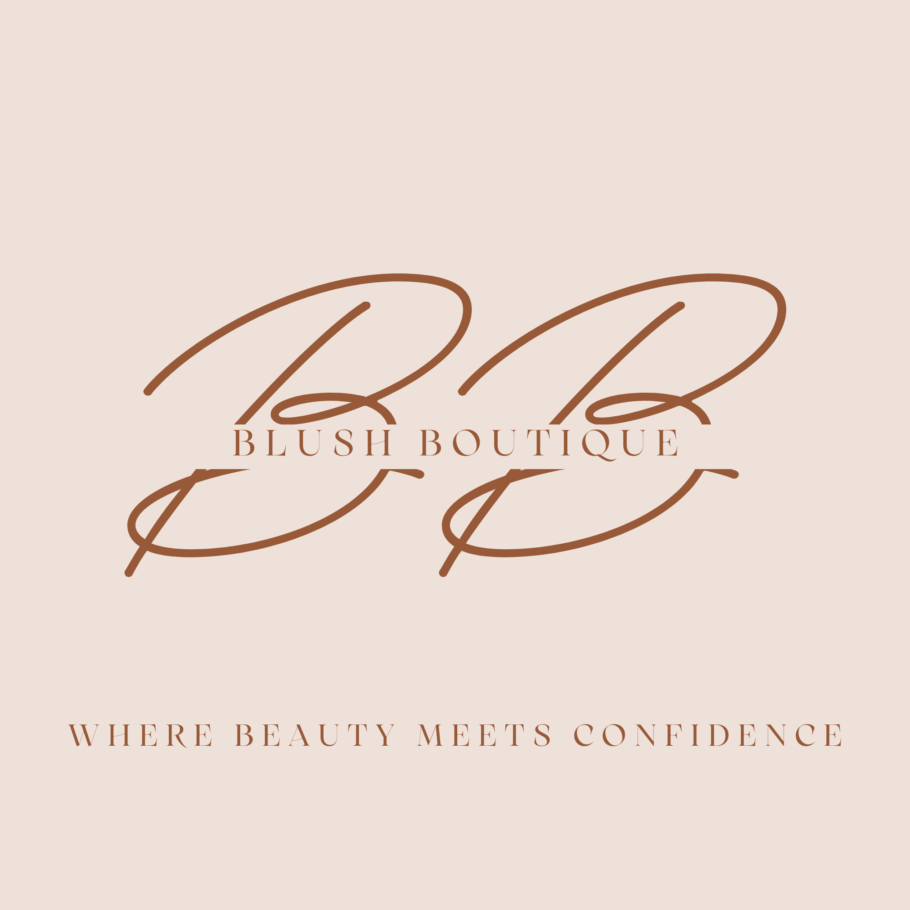

More about our business
Blush boutique is a beauty and skincare brand established to inspire confidence and self-expression through high-quality and affordable products. Our business deals with meeting the needs of modern consumers is through offering a carefully selected range of makeup, skincare, and beauty accessories. We know that beauty is personal and that's why we want to provide products that will boost natural features and self-care and confidence. Blush Boutique is proposed to be developed as an online platform that is simple, visually appealing, and easily navigable to allow customers to explore products, learn about beauty trends, and connect with the brand effortlessly.
Our Mission
Our mission is to provide accessible, high-quality beauty and skincare products that empower individuals to feel confident in their own skin. Blush Boutique aims to create a positive and engaging online experience where customers can discover products that suit their personal style and skincare needs.
Our Backstory
Blush Boutique was created from a passion for beauty and the growing influence of digital platforms in the beauty industry. Inspired by social media trends and the need for affordable yet effective products, the brand was developed to cater to young, modern consumers. The idea was to build an online space where beauty lovers can easily access products, stay updated with trends, and enjoy a convenient shopping experience.